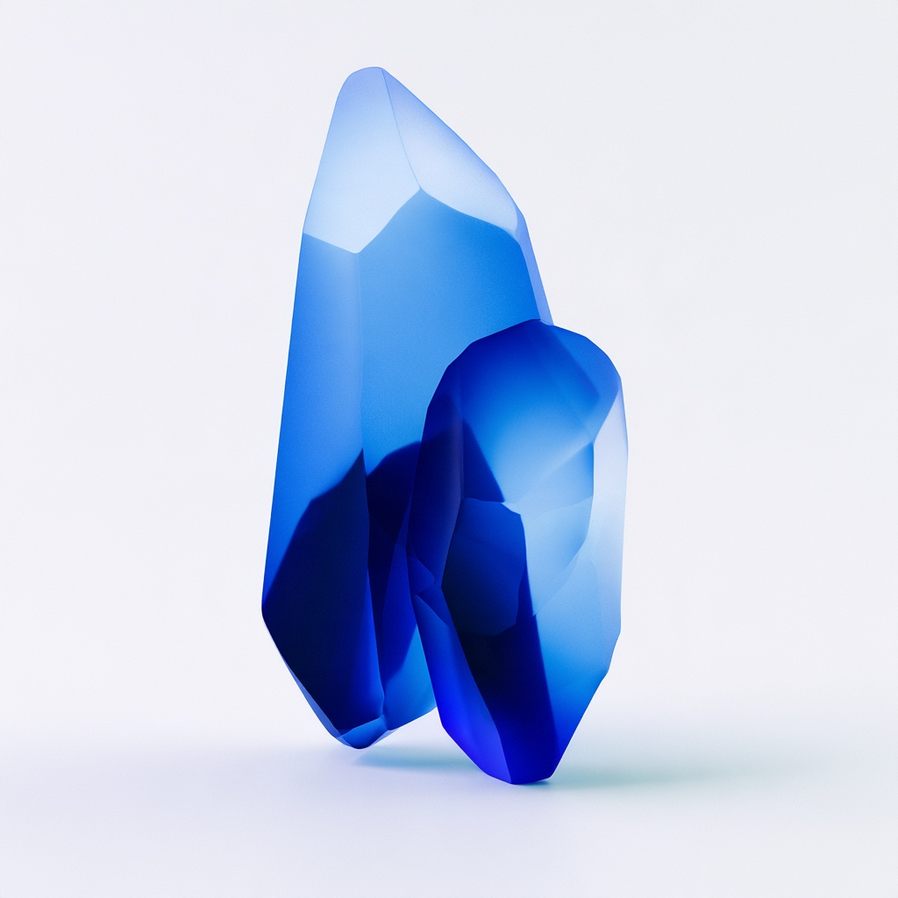
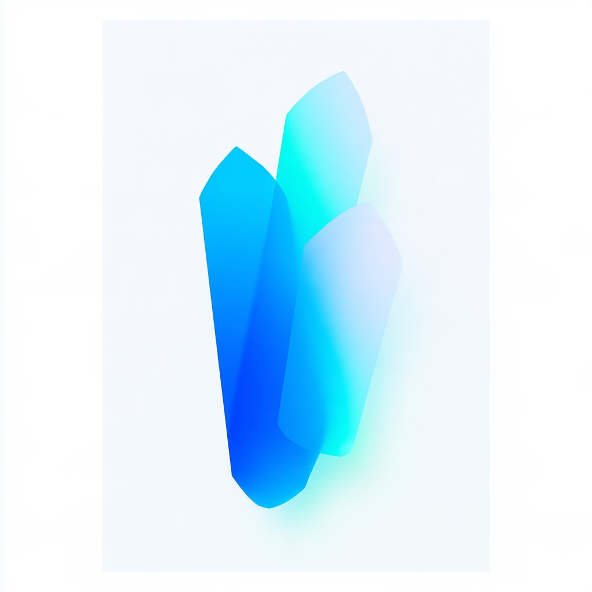
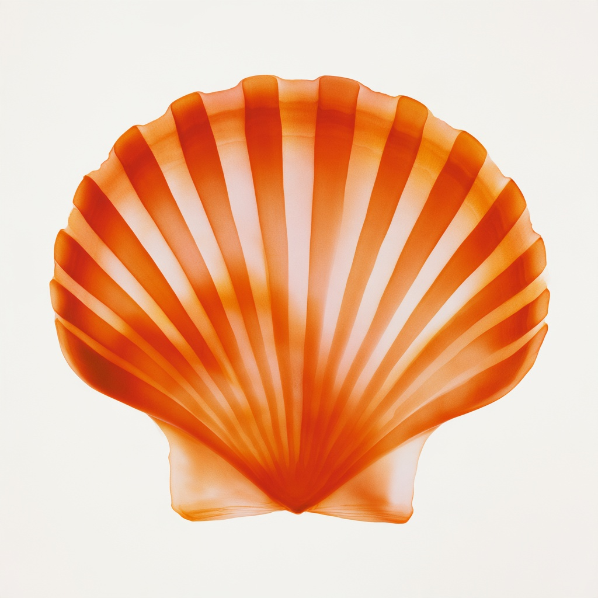
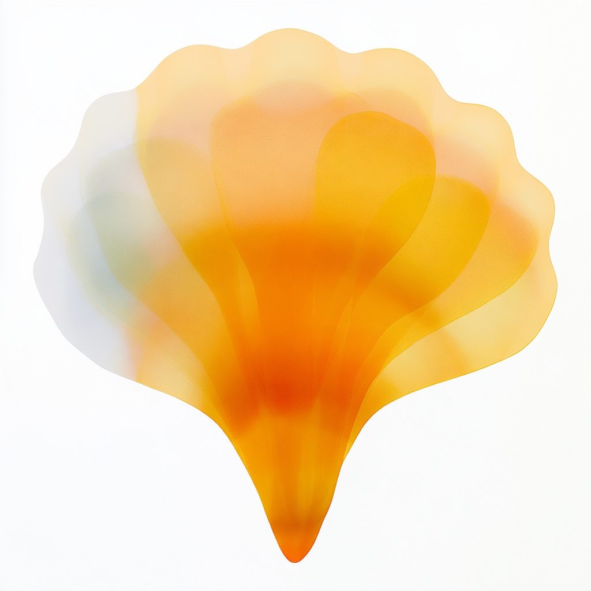
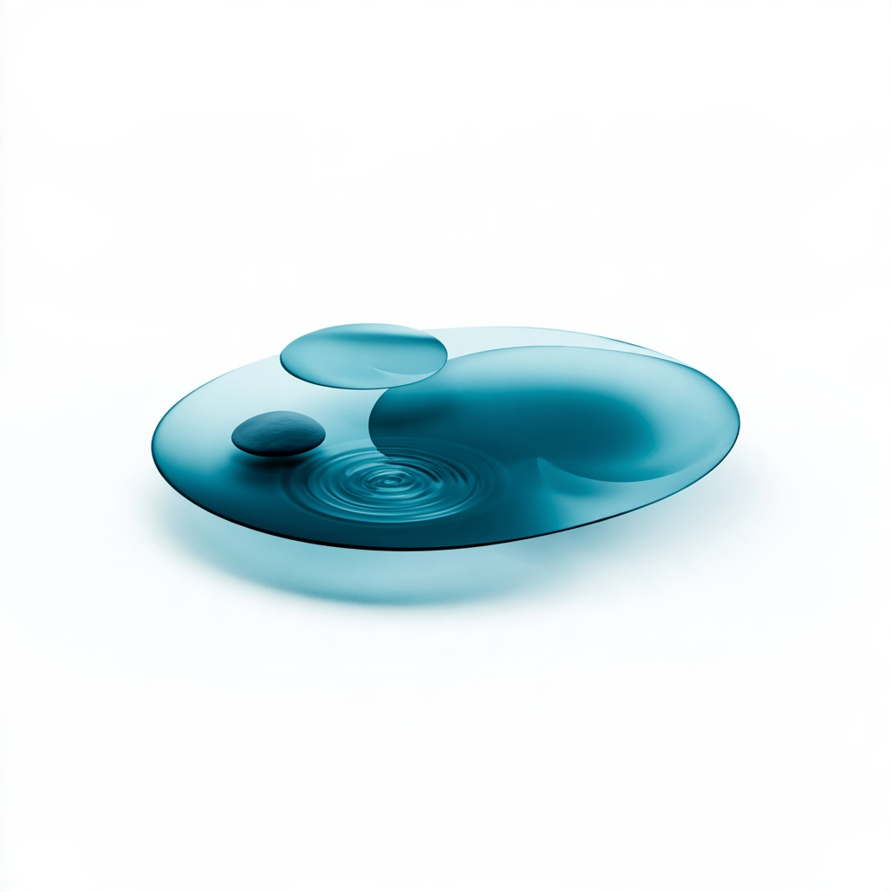
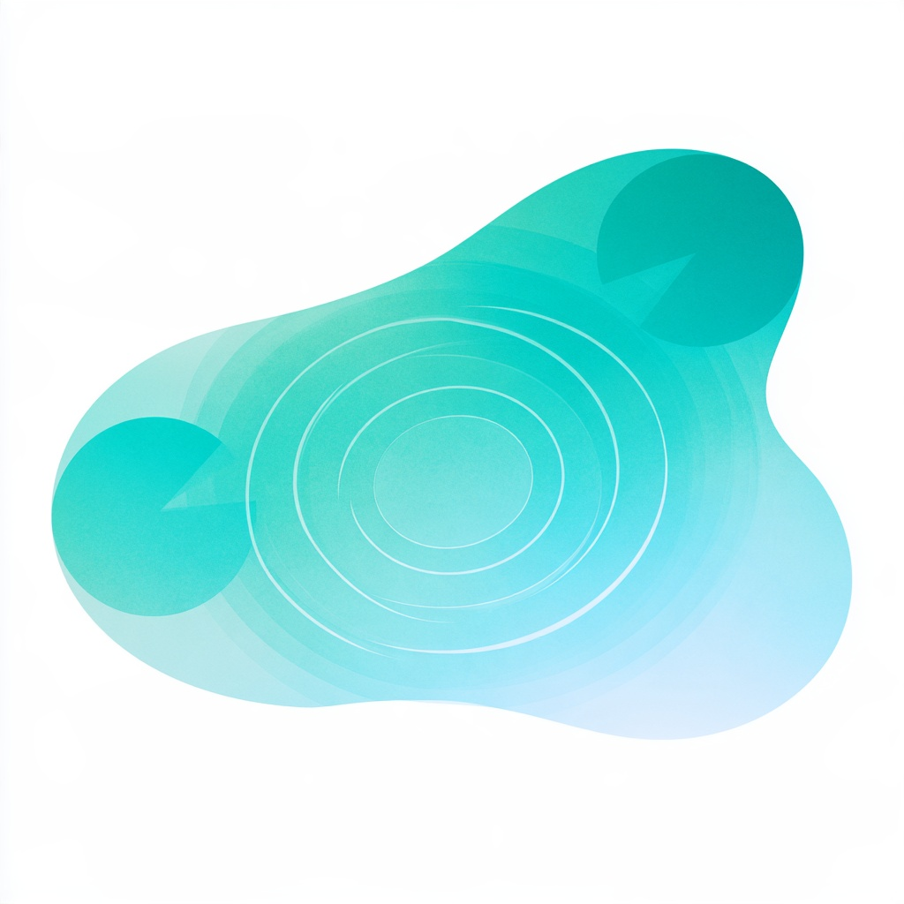
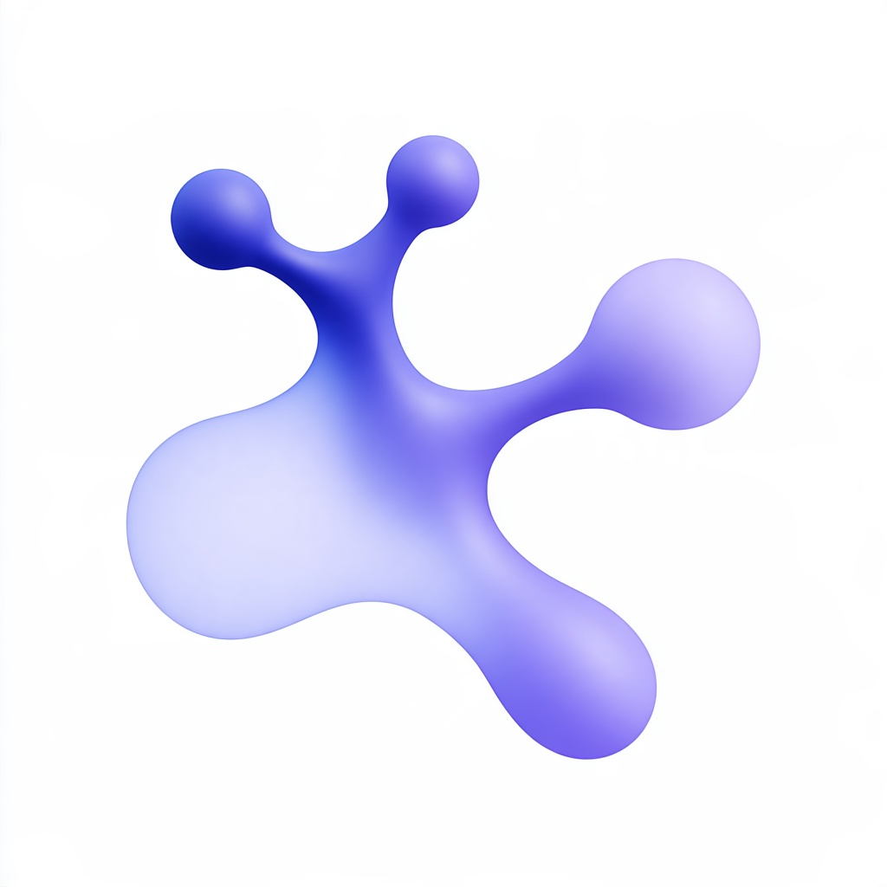

渐变组 · 风格统一修订
晶体、贝壳、池塘、菌丝四项；助手初选，待确认。原有五个元素为风格基准。
返回全部元素对照 →
晶体

修改前
修订初选 · 减少硬切面与反射，以少量重叠色面表现体积。贝壳

修改前
修订初选 · 以宽幅渐变扇面替代细密沟槽。池塘

修改前
修订初选 · 俯视水面、缺口荷叶与涟漪，强化池塘识别。菌丝

修改前 修订初选 · 以细长分支、连接与流向表达协同创作，保留自然网络隐喻；仍需结合文字识别。
修订初选 · 以细长分支、连接与流向表达协同创作，保留自然网络隐喻；仍需结合文字识别。原有渐变元素